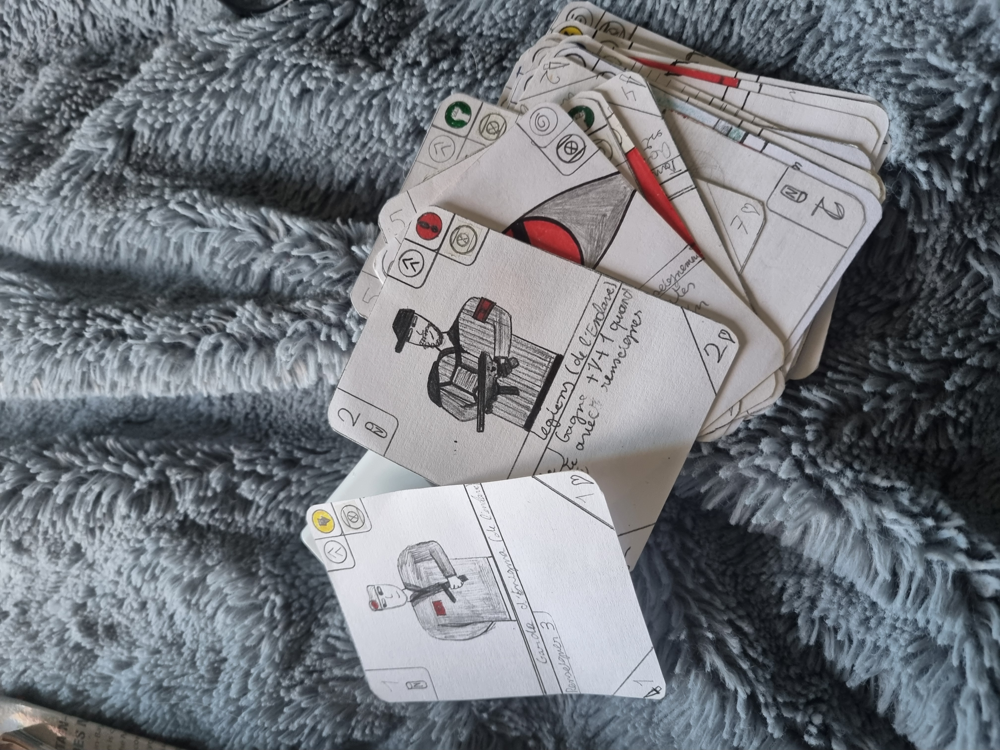

Juillet 2021 Castration de maïs à Chassenet, Thuret, Puy de dôme en Auvergne.
Juillet 2024 Castration de maïs à Chassenet, Thuret, Puy de dôme en Auvergne.
Juillet 2012 Récolte familiale à Ris, Puy de dôme, Auvergne.
En 2019, j'ai effectué un stage dans les services de maintenance publics de Thuret, où j'ai aidé à nettoyer les locaux, à entretenir la flore et les arbres de mon village et j'ai aidé à concevoir des jardinières et l'aménagement de ces dernières.
SAE 1.01, Stage de gestion.
Une équipe composée de Léo Grisard-Dubois et Thomas Bouquier.
Ce projet vise à développer une application en ligne de commande pour la gestion de stages dans un environnement fictif. L'application sera conçue pour fonctionner dans un terminal informatique et sera écrite en langage C. L'application sera divisée en trois sections principales, chacune servant un objectif et un groupe d'utilisateurs différents. La première section sera consacrée à la gestion des étudiants. Cette section permettra aux étudiants de créer un nouveau profil et de soumettre des demandes de stages. Les étudiants pourront consulter leur statut de stage actuel, mettre à jour leurs informations personnelles et communiquer avec les gestionnaires de stages concernant leur demande. La deuxième section sera consacrée à la gestion des gestionnaires de stages. Cette section permettra aux gestionnaires de créer de nouveaux stages, d'examiner les demandes de stages et de communiquer avec les étudiants concernant leurs demandes. Les gestionnaires pourront également promulguer des stages, ce qui signifie qu'ils peuvent officiellement annoncer et attribuer des stages aux étudiants. Cette section fournira aux gestionnaires une vue d'ensemble de tous les stages, y compris leur statut et les étudiants qui leur sont assignés. La troisième et dernière section sera réservée au jury. Le jury sera responsable de l'évaluation des stages et de l'attribution de notes aux étudiants. Cette section permettra au jury de consulter les détails des stages, y compris le travail des étudiants et tout commentaire du gestionnaire de stage. Le jury aura également la possibilité de saisir des notes et de les soumettre pour enregistrement officiel. Dans l'ensemble, cette application en ligne de commande fournira un moyen simplifié et efficace de gérer les stages dans un environnement fictif. En divisant l'application en trois sections distinctes, il sera facile pour les étudiants, les gestionnaires et les jurys de naviguer et d'utiliser l'application pour effectuer leurs tâches respectives. L'utilisation du langage C garantira que l'application est rapide, fiable et compatible avec une large gamme de systèmes informatiques.
Les résultats sont la note obtenue à la fin du projet.
SAE 1.02, Comparaison d'approches algorithmiques.
Une équipe composée de Léo Grisard-Dubois et Thomas Bouquier.
Ce projet vise à développer une application jeu en ligne de commande. L'application sera conçue pour fonctionner dans un terminal informatique et sera écrite en langage C. Le jeu se déroule de telle sorte que nous avons un menu qui demande le surnom du joueur et le mot de passe associé, ce qui donne accès à un menu qui a l'option de lancer un jeu avec la campagne de base, de créer un nouveau monde à ajouter à une campagne, d'afficher les scores triés par nom de joueur ou par score croissant, de rechercher un joueur par nom et ensuite il y a une option pour jouer une campagne personnalisée avec le monde ajouté auparavant.
Les résultats sont la note obtenue à la fin du projet.
SAE 1.03, Installation d'une station de travail pour le développement.
Ce travail est effectué seul.
Ce SAÉ permet de vivre des missions d'installation de stations de travail sous Linux, ainsi que de se familiariser avec la maintenance. La liste des connaissances est fournie et est divisée en deux parties correspondant à chaque période. Toutes les procédures acquises doivent pouvoir être automatisées et ne doivent donc pas dépendre d'un outil graphique.
Les résultats sont la note obtenue à la fin du projet.
SAE 1.04 Base de données
Notre groupe : Grisard-Dubois Léo, Fortune Grégoire, Bouquier Thomas
Objectifs du SAÉ : Le premier objectif de ce SAÉ est d'étudier et de mettre en place une base de données couvrant une partie du système d'information d'une entreprise. Ce SAÉ permet un premier contact avec la formalisation et la mise en œuvre d'une base de données. Le second objectif est d'analyser les enjeux économiques de ces données. Partie base de données Un rapport au format .pdf contenant : Une présentation synthétique en quelques lignes de l'entreprise avec son type d'activité, Le modèle de données conceptuel (MCD) en précisant clairement les identifiants, Le modèle de données logique (LDM) en précisant clairement les clés primaires et étrangères. Le script .sql permettant de supprimer, créer, remplir (jeu de données), afficher les tables et les requêtes permettant de répondre aux questions posées dans le sujet : script de création de tables script d'insertions script de requêtes script d'insertions en échec script qui appelle les autres Le jeu de données à utiliser. Partie économie Répondre aux questions suivantes dans le rapport dans productionRendu : Zone commune : Présenter les caractéristiques de l'entreprise dans laquelle vous travaillez et le marché sur lequel elle opère. Lister les catégories de données que vous traitez en les classifiant selon les typologies vues en cours. À quel stade du cycle de vie de ces données intervenez-vous ? Quels sont les acteurs économiques impliqués en amont et en aval de votre activité ? Partie individuelle : 4. Résumer en deux ou trois phrases pourquoi votre travail sur ces données est important pour l'entreprise pour laquelle vous travaillez.
Les résultats sont la note obtenue à la fin du projet.
SAE 1.05 Recueil de besoins.
Groupe : Grisard-Dubois Léo, Bouquier Thomas, Gillet Matteo.
L'objectif de ce SAÉ est de montrer notre capacité à recueillir les besoins d'un client et à les analyser pour présenter notre compréhension. Il utilise donc les ressources pédagogiques « Développement d'interfaces web » pour la capacité à présenter les besoins à un client, « Gestion de projet et organisation » pour la gestion de projet et « Bases de la communication » pour la communication avec le client.
Les résultats sont la note obtenue à la fin du projet.
S.A.E. S1-06 : DÉCOUVERTE DE L'ENVIRONNEMENT ÉCONOMIQUE ET ÉCOLOGIQUE
Notre groupe : Grisard-Dubois Léo, Fortune Grégoire, Bouquier Thomas.
OBJECTIF DU S.A.É. Il s'agit de réaliser une présentation numérique de la position économique et écologique d'une entreprise SUJET : Sur son site web, l'entreprise pour laquelle nous avons créé le S.A.É. 1-04 (création d'une base données) souhaite ajouter une présentation de son positionnement économique et de son impact sur l'environnement, destinée aux acteurs économiques affectés par son activité. Elle nous demande de l'aider dans cette tâche.
Les résultats sont la note obtenue à la fin du projet.
Jeu de cartes Apokaliptyca.
Travail seul, commencé il y a sept ans.
Ce projet est un jeu de cartes sur un monde post-apo avec de nombreux personnages et factions. J'ai trois versions différentes de ce jeu de cartes et une version finale en cours de travail. Ce jeu de cartes comporte 8 factions différentes et chacune a un thème, une histoire, un système politique et un style de jeu unique dans le jeu avec des personnages principaux lorsque vous jouez.
Bénéfices personnels et créativité.

{kind=link}
{kind=link}
{kind=link}